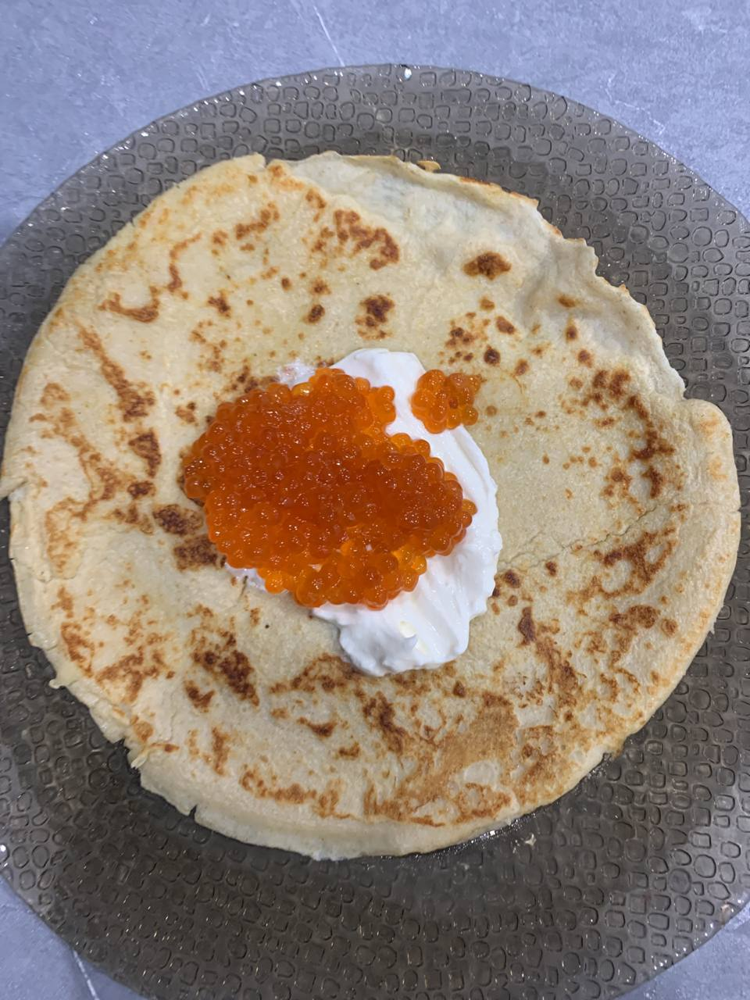

Crepes With Oats

Today I'm going to show you how to make crepes with oats.
These gluten free crepes are so light and hold its shape so well.
There's no sugar in this recipe, so you can serve them sweet or savory. Perfect for dessert or breakfast.
Ingredients:
- 2 cups ground oats, or oat flour (200g)
- 1/4 cup tapioca starch or cornstarch (35g)
- 1/4 tsp salt
- 2 eggs
- 1.5 cups milk, dairy or non-dairy (360ml)
- 1.5 cups water (360ml)
Steps:
- In a bowl beat two eggs until smooth.
- Add ground oats, salt, tapioca or cornstarch and mix it up.
- Gradually add milk and water, 1/2 cup at a time, until smooth and runny batter is formed.
- Let the batter rest in the fridge for 30 minutes, for oats to absorb more liquid.
- Heat a crepe pan over medium heat (or any other non-stick pan) and pour 1/3 cup of the batter swirling around pan to spread evenly.
- Cook for 1 minute, or until the edges start to pull away, then flip and cook for another 30 seconds. Repeat until all the batter is used up.
- Serve your crepes sweet or savory, with any type of filling you like.